| ・ 日本機械学会2010年度年次大会＠名古屋工業大学 (H22.09.08) | |||
Y名田くんとK野くんと助教の人が発表しました．助教の人はひとりで食べ歩いていたようです． |
|||
|
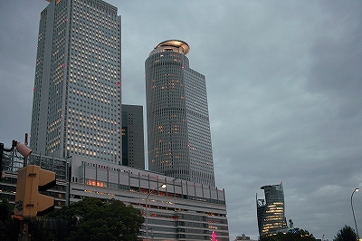
久しぶりの名古屋．駅前にビルがたくさんできてる． |
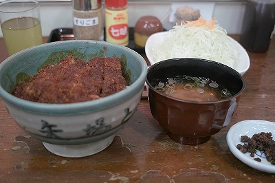
矢場とん＠エスカ | ||
|
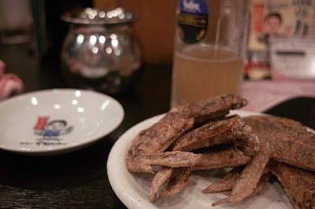
世界の山ちゃん＠東店 |
まるや本店 | ||
|
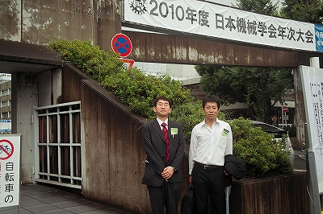
台風も過ぎて2人はやる気満々です． |
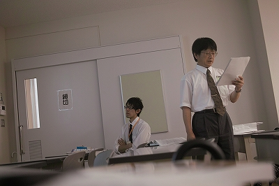
村田先生＠座長 | ||
|
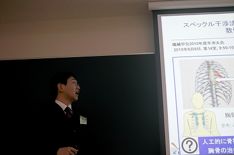
Y名田くん＠発表中 |
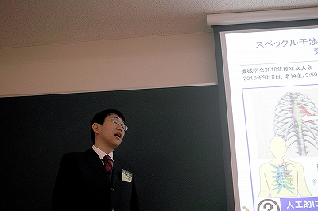
| ||
|
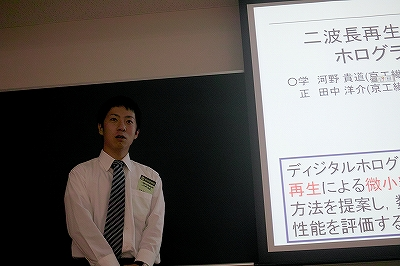
K野くん＠発表中 |
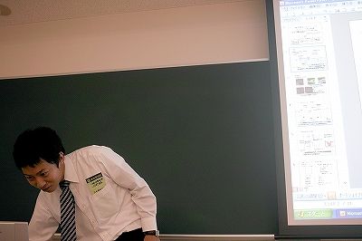
リハーサルモードになってました． | ||
|
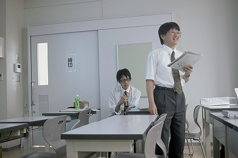
セッションはこれでおしまいです！ |
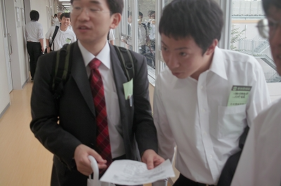
さてお昼ご飯はどうしようか？ | ||